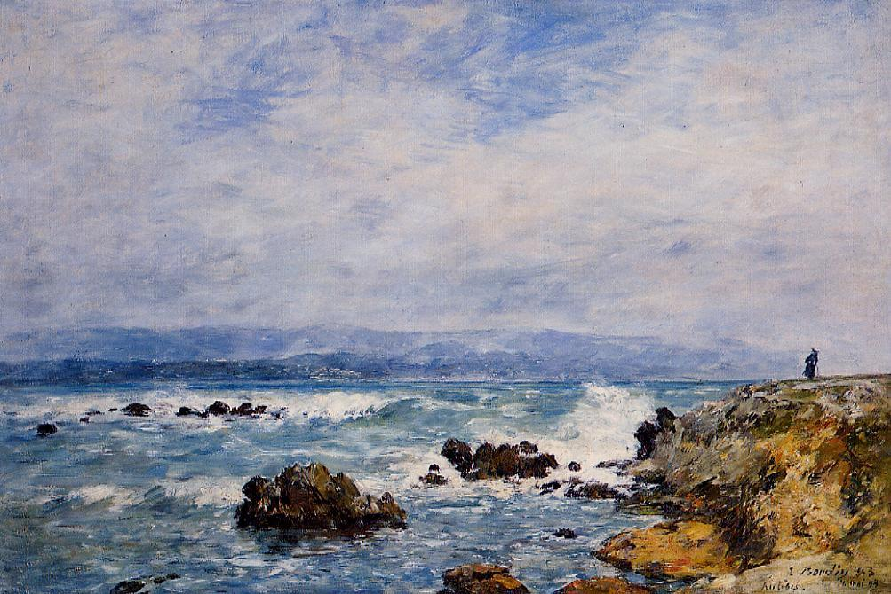

Nie pisać nigdy więcej
Rok 1910. Po ukończeniu pracy nad „Maltem” Rilke czuje się jak rozbitek, ocalały, lecz w głębi duszy bezradny… W jego myśli wsącza się podstępny niepokój, coraz dotkliwiej nurtuje go przeświadczenie, iż ostateczne wybawienie kryje się w owym okrutnym, zimnym jak szkło zdaniu: nie pisać nigdy więcej.
„Początkowo myślałem, że znajdę w sobie wiele, wiele cierpliwości” — zwierza się w liście do Lou Andreas-Salomé. „Tyle zabłąkań, tyle doświadczeń było moim udziałem. Widziałem, jak Rodin w siedemdziesiątym roku życia popadł w takie zwątpienie, jakby cała jego niezmierna praca była niczym… Wystarczyła chwila znużenia, kilka dni opuszczenia i życie wydało mu się bez wartości, jakby niczego nie dokonał”.
Parę lat później w rozmowie z poetą księżna Marie von Thurn und Taxis odważyła się zagabnąć go o elegie, których pierwsze wersy zapisał Rilke podczas pobytu na zamku w Duino. „Wciąż mam przed oczyma — wspomina księżna — rozpacz malującą się w jego oczach: Elegie, ach, Księżno, elegie!… Całą jego istotą owładnęło zwątpienie, jakiego dotąd nie znałam”.
Pełen bolesnego wahania Rilke wyznał księżnej Taxis swe obawy, iż elegii nigdy ukończyć nie zdoła. Był niemal zdecydowany opublikować je wraz z pozostałymi fragmentami w formie, w jakiej istniały. Księżnę ogarnęło przerażenie: „Na Boga, Serafico, niechże Pan tego nie czyni! Pod żadnym pozorem… Elegie muszą zostać ukończone… i tak się stanie… Zaklinam Pana… trzeba jedynie czekać, czekać… wiem, że to nadejdzie”.
Fragmenty korespondencji Rilkego i Lou Andreas-Salomé w przekładzie W. Markowskiej, fragmenty „Wspomnienia o Rainerze Marii Rilkem” pióra Marie von Thurn und Taxis w przekładzie autora.